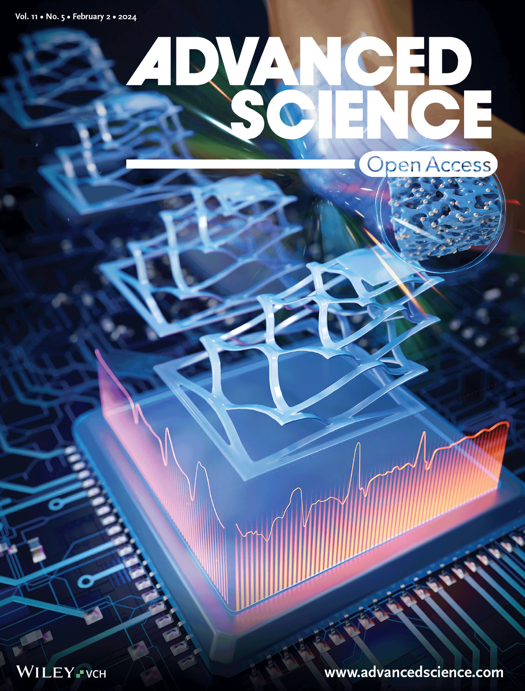
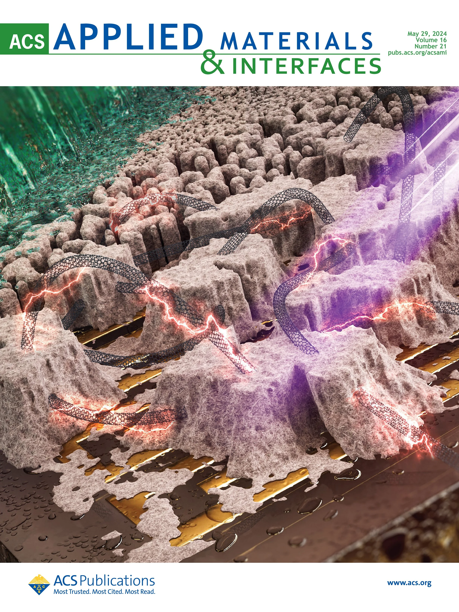
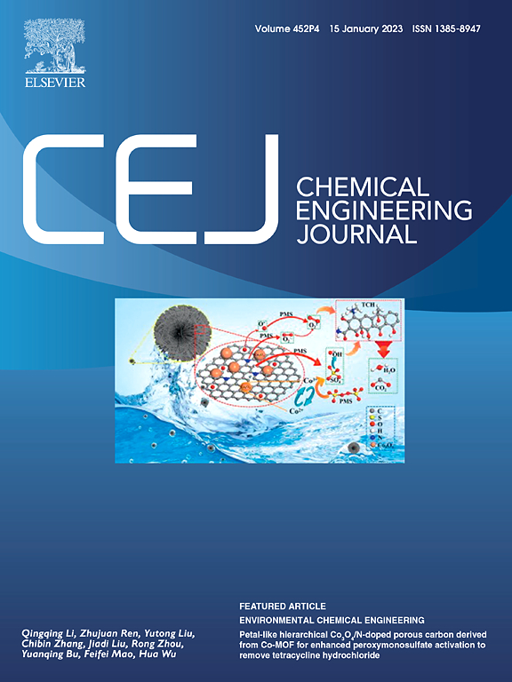

Publications



Selected papers. Full list on Google Scholar.
2027
-
pH-regulated inner-sphere coordination for selective Fe(III) removal over rare-earth elements from acidic leachates using a D2EHPA-based resin
Pan, Y.; Zhan, W.; Honaker, R.; Zhang, W.
Separation and Purification Technology, 421, 140463.
2026
-
Selective Lithium Recovery via Photothermal Evaporation and Hydration-Controlled Adsorption
Pan, Y.; Zhang, Y.; Liu, G.; Zhan, W.; Zhang, W.
Advanced Science, e20066.
2025
-
Impurity Shielding in Li/Al-LDH-Based Lithium Recovery from Produced Water via Activated Carbon Pretreatment
Pan, Y.; Zhang, W.
ACS Sustainable Chemistry & Engineering.
-
Advanced computational strategies for lithium chemical and electrochemical adsorption: A comprehensive state-of-the-art review
Pan, Y.; Zhan, W.; Zhang, W.
Desalination, 600, 118524.
-
Investigating CO₂ mineralization of fine mafic minerals: Insights into reaction characteristics and physicochemical attributes
Pan, Y.; Ji, B.; Nojabaei, B.; et al.
Journal of Environmental Chemical Engineering, 13(3), 116827.
2024
-
Electro-spun Lithium Porous Nano-sorbent Fibers for Enhanced Lithium Adsorption and Sustainable Applications
Pan, Y.; Zhang, Y.; Thompson, C.; Liu, G.; Zhang, W.
ACS Applied Materials & Interfaces.
-
Charge transfer-driven enhanced lithium extraction using poly(acrylic) acid-modified layered double hydroxide
Pan, Y.; Ji, B.; Zhang, W.
Chemical Engineering Journal, 494, 152939.